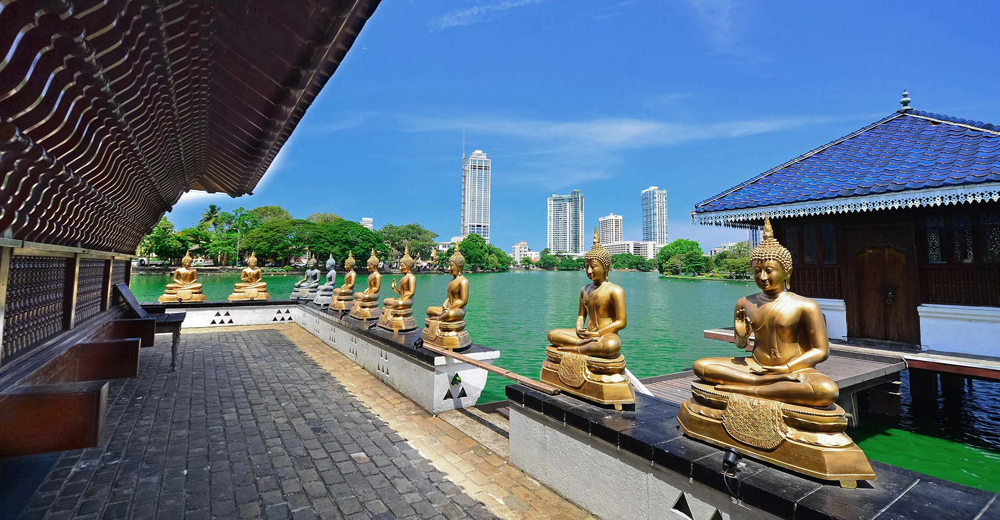
Gangaramaya Temple
One of the most important temples in Colombo, featuring a mix of modern architecture and cultural essence.
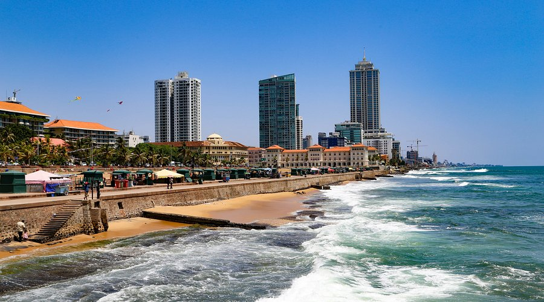
Galle Face Green
A half-kilometre promenade stretching along the coast, perfect for sunset walks and authentic street food.

Colombo Lotus Tower
The tallest self-supported structure in South Asia, offering breathtaking panoramic views of the entire city.
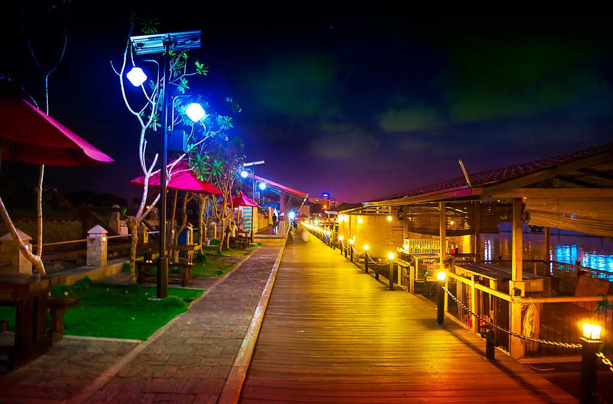
Pettah Floating Market
A vibrant, bustling market built on the water, ideal for shopping local crafts and electronics.
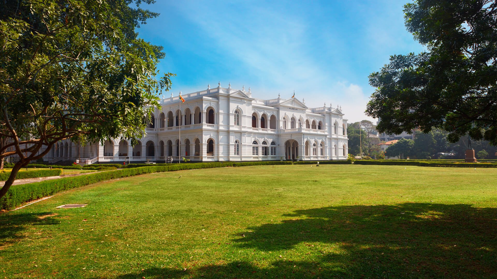
National Museum of Colombo
The largest museum in Sri Lanka, housing ancient royal regalia and telling the story of the island's rich heritage.
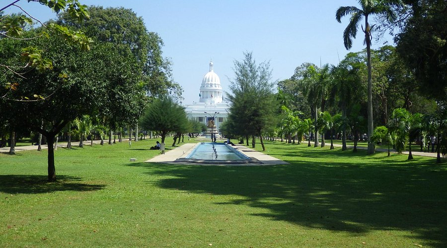
Viharamahadevi Park
A sprawling, lush green oasis in the heart of the city featuring huge trees, a serene lake, and walking trails.
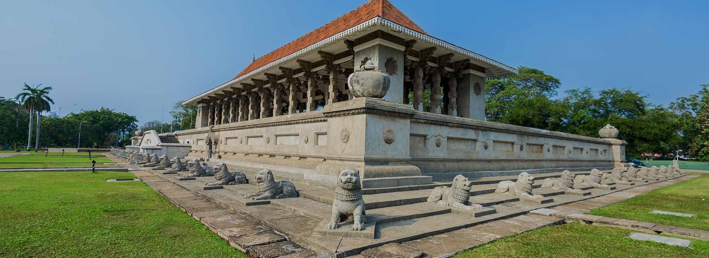
Independence Memorial Hall
A stunning stone monument built to commemorate the country's independence, surrounded by peaceful gardens.
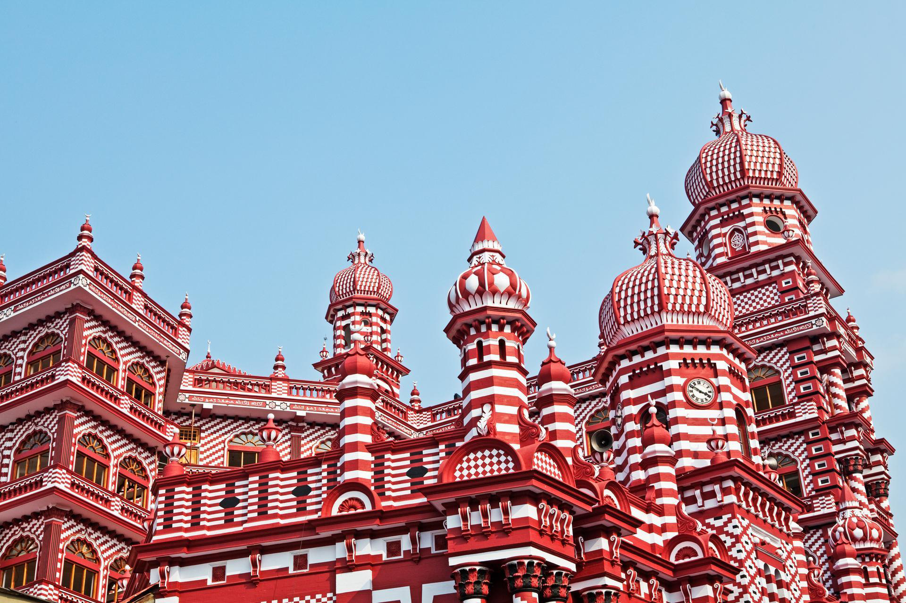
Jami Ul-Alfar Mosque
Known as the Red Mosque, this architectural marvel features striking red-and-white candy-striped brickwork.
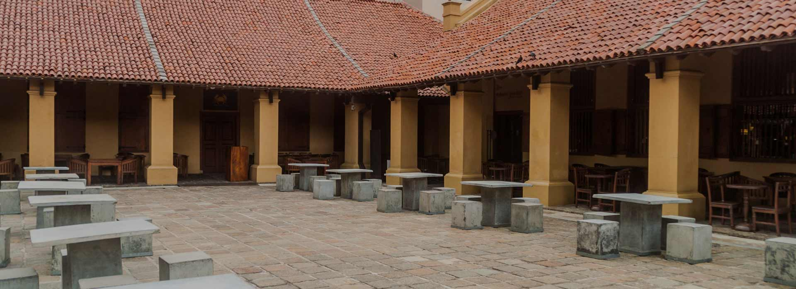
Dutch Hospital Precinct
A beautifully restored 17th-century colonial hospital that is now home to high-end cafes, restaurants, and boutiques.
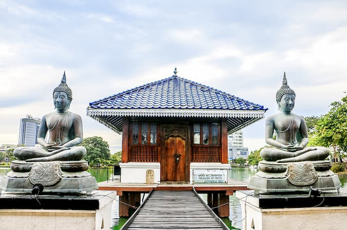
Seema Malaka
A tranquil, picturesque meditation center designed by Geoffrey Bawa, floating on the calm waters of Beira Lake.
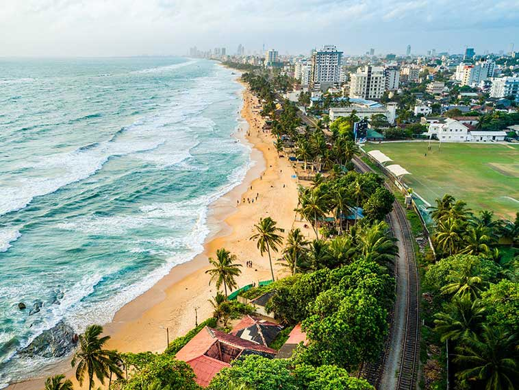
Mount Lavinia Beach
Just south of the city center, this famous stretch of golden sand is perfect for swimming, seafood, and sunset views.
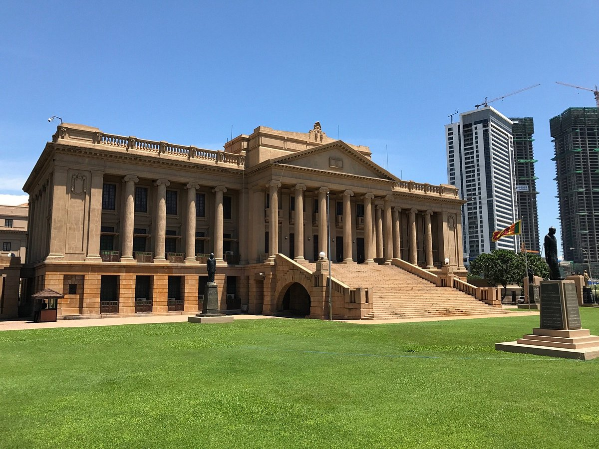
Old Parliament Building
A grand Neo-Baroque building facing the ocean, serving as a reminder of Colombo's colonial political history.